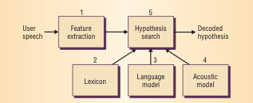
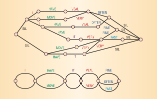
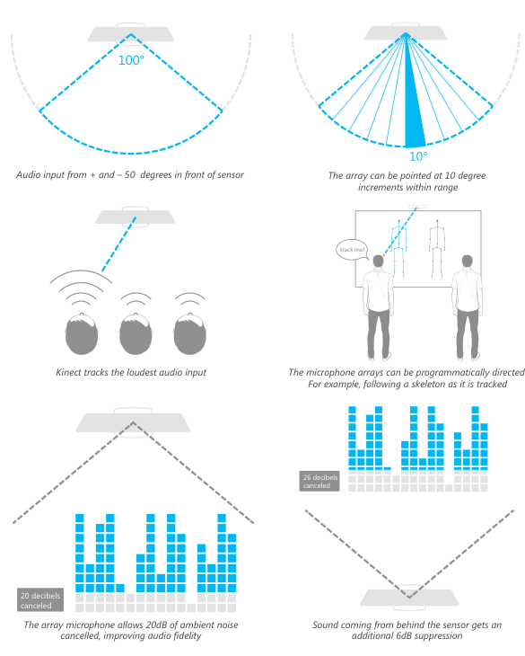

introduction
One of the most essential components of an effective natural user interface is speech recognition (also commonly referred to as voice recognition). In simple terms, speech recognition reflects the interaction between a person and some sort of computing device or system that involves the person using his/her voice to provide input to the system.
Here is how the British-English dictionary defines the term voice recognition:
the ability of a computer to know the voice of a person speaking into it, so that only voices that the computer knows can use the system
Let's look at a simple example of how this technology is being used by popular modern applications:

Siri (Speech Interpretation and Recognition Interface) is an application developed by Apple for the most recent version of their incredibly popular product, the iPhone. In this example of its use, a user simply asks their question to their phone with this application running on their phone, and the software responds by presenting the user with a list of appropriate restaurants along with reviews and maps for each one. Siri exemplifies the pinnacle of how speech recognition technology is being used in consumer products today.
technology
overview
There are many components that make up the broad category of speech recognition. While the most important one is the actual recognition of speech itself, some of the lesser known of its components include speaker recognition, talk-through (also known as barge-in), word spotting, and decoy. First, I'd like to take a look at the primary algorithms involved with speech recognition.
algorithms
summary
The following is a very simplified summary of the speech recognition algorithm as described by researchers from AT&T:
The basic problem that this algorithm is attempting to solve can be given by the following prompt:
Given an utterance, find its most likely written transcription.
The general solution for this involves transforming audio into weighted acyclic graphs that map possible interpretations of segments of the audio in the form of phonemes, phones, syllables, and words. The final written transcription for the audio is derived from the optimal path in this graph.
The first step in this process is analyzing acoustic wave patterns from speech that at regular short intervals (for example, 10 milliseconds).
details
The basic process of recognizing speech is simplified as
Speech -> 1. Feature Extraction -> 2. Hypothesis Search -> Decoded Hypothesis

Feature Extraction
In the feature extraction phase, the software system extracts a set of 39 parameters describing the audio segment in a vector called a feature. The collection of features are often referred to as acoustic observations.Hypothesis Search
The hypothesis search phase uses the feature vectors to analyze speech. Here, a lexicon is used in combination with a language and acoustic model. A lexicon is a list of every possible word with a unique pronunciation. Lexicons are often created with a certain task in mind to limit its size and therefore reduce the complexity of the algorithm. A language model computes the probability of a sequence of words and an acoustic model computes the probability of sequences of feature vectors. Together, these 3 things are used to create the weighted acyclic graph that was mentioned earlier. The nodes in this graph are word possibilities and the edges are weighted by the probabilities. Each path through the graph represents a possible sequence of words, and the final result is the sequence that has the best combined probability, which is the speech that the software has recognized.
Here's a visual of the graph that the hypothesis search might use in an attempt to recognize the phrase I move it very fast

(source Padmanabhan, Picheny)
related technology
speaker recognition
Speaker recognition refers to the ability of the software to identify the individual who is speaking and is sometimes referred to as speaker identification. (source Kurfess)
This capability requires additional intelligence from the software system, so that it can accurately distinguish the voices of different people with minimal errors. In this way, this technology can be used in biometric systems, which are used to prevent access to unauthorized users. The most common use case for voice based biometric systems are as security measures. An example of this in the real life is the Loquendo Speaker Verification, which is a product used in a variety of businesses worldwide.
For these types of applications, the term speaker identification is usually referred to as speaker verification in an attempt to better clarify the nature of the technology (security). Since a speaker verification system only needs to check for the correct user, it usually requires less complexity in the underlying algorithm. Speaker identification, on the other hand, requires more complexity in the underlying algorithm, because it has to attempt to actually match the voice to the appropriate user.
There are two main types of speaker recognition:
text-dependent:
requires a matching text phrase to be spoken by the appropriate person to recognize the speakertext-independent:
only requires the actual voice to match up
(source: Beigi)
talk-through
Talk-through, also known as barge-in, is simply the name for the technology that allows users of speech recognition systems to interrupt the system as it is prompting them for input. (source: Kurfess)
The most obvious example of this in use in the real world is from the automated phone systems of many large telephony companies. This is something that I have personal experience with. Recently, I was attempting to contact the support group for my cable company on the phone. This company used automated voice recognition software that began to list off the available options for me to speak. Before it had finished, I voiced the appropriate command for my system. In response, the system recognized my command and discontinued listing the other options, so that it could help me with the option that I chose.
This type of voice technology is one that is becoming increasingly common with each passing year. Big companies like AT&T, Cisco, Hewlett Packard, and IBM all have patents that relate to barge-in enabled software.
word spotting
Word spotting is the ability of a voice recognition system to correctly identify specific words, even when surrounded by miscellaneous words that are irrelevant to the desired ones. (source: Kurfess)
This technology is essential for software that needs to analyze spoken words in an attempt to detect if a certain phrase was spoken or not. The U.S. government is one of the key users of word spotting technology. Homeland Security uses it in its surveillance of many different audio sources on a regular basis. In an attempt to help prevent terrorist plots, they analyze spoken audio in an automated fashion, using word spotting tuned for phrases that may indicate terrorist activity. (source: Alon)
Other major users of word spotting technology are call centers. Some of them use software that is tuned to listen to phrases that indicate that a call is "problematic", so that they can assist supervisors in finding and resolving them. Others use it to analyze their customers' responses to the company itself after calls have taken place in order to better assess their effectiveness. (source Alon)
decoy
In the world of speech recognition, a decoy is defined as a word, phrase, or sound that is used to identify when the voice input has either stopped or been interrupted. (source: Kurfess)
Decoys are separated into 2 main categories:
- natural
- artificial
Natural decoys are inherent to the user and are most often associated with sounds having to do with hesitation or confusion on the user's part. Artificial decoys are not typically associated with the user's speech but with noises that are a product of the environment that he or she is in.
Decoys are crucial for dictation software. Programs that offer dictation need to be able to reproduce a user's speech with text at a very accurate and consistent level. In order to do this, the software needs to be able to correctly identify accidental utterances like "uh" and "um", so that it doesn't record these mistakes. By training the system to recognize these words as decoys, this problem can potentially be avoided.
kinect
technical aspects
In addition to color, depth, and skeletal data, Microsoft's Kinect collects sound data, which allows the device to respond to voice commands. According to Microsoft's press release, the Kinect (originally introduced as Project Natal) is equipped with a "multi-array microphone", which handles processing the voice commands. The folks at iFixit disassembled the sensor and discovered that it contains 4 downward facing microphones that the array is composed of.
The audio capabilities of the Kinect are as follows:
- acoustic noise suppression
- echo cancellation
- beam formation
The Kinect sensor can detect audio that is within +-50 degrees in front of the sensor. Within that range, the microphone array can be pointed in 10 degree increments and can be programmatically directed. It also supports up to 20dB of ambient noise cancellation for mono sound input. Sound from behind the sensor will be suppressed up to 6dB. The default behavior of the device is to track the loudest audio source. (source: Human Interface Guidelines)

Here's a link to a listing of languages that the Kinect's speech recognition software currently recognizes and supports.
To be used effectively, the device needs to be calibrated, so that it can better recognize voice commands. Also, the Kinect SDK gives third party developers access to these audio features.
sdk
Microsoft provides programmatic access to the speech recognition capabilities of the Kinect with its software development kit. Its Runtime Language Pack has an acoustical model optimized for the device built in. To use it, developers need to create an instance of the Speech Recognizer Engine object. With that, they can load a customized grammar that contains the desired keywords to be detected. Then, developers need to implement an event handler that corresponds to the device when it may have recognized one of these words. This method will have access to a confidence level that represents how confident the sensor is that is has accurately recognized a word. Using this, developers can fine tune how sensitive their software is when dealing with voice commands.
Here is a code sample from Microsoft that demonstrates basic speech recognition using the sdk:
http://msdn.microsoft.com/en-us/library/hh378426.aspx
using Microsoft.Speech.Recognition;
using System;
using System.Collections.Generic;
using System.ComponentModel;
using System.Data;
using System.Drawing;
using System.Linq;
using System.Text;
using System.Windows.Forms;
namespace WindowsFormsApplication1
{
public partial class Form1 : Form
{
public Form1()
{
InitializeComponent();
}
private void Form1_Load(object sender, EventArgs e)
{
// Create a new SpeechRecognitionEngine instance.
sre = new SpeechRecognitionEngine();
// Create a simple grammar that recognizes "red", "green", or "blue".
Choices colors = new Choices();
colors.Add(new string[] {"red", "green", "blue"});
// Create a GrammarBuilder object and append the Choices object.
GrammarBuilder gb = new GrammarBuilder();
gb.Append(colors);
// Create the Grammar instance and load it into the speech recognition engine.
Grammar g = new Grammar(gb);
sre.LoadGrammar(g);
// Register a handler for the SpeechRecognized event.
sre.SpeechRecognized +=
new EventHandler<SpeechRecognizedEventArgs>(sre_SpeechRecognized);
}
// Create a simple handler for the SpeechRecognized event.
void sre_SpeechRecognized(object sender, SpeechRecognizedEventArgs e)
{
MessageBox.Show(e.Result.Text);
}
SpeechRecognitionEngine sre;
}
}
There are two main methods of handling voice input that software developers can choose to implement with the sdk: always on, active listening and keyword/trigger.
always on, active listening
In this mode, the sensor is constantly listening for voice input from the user. Microsoft recommends that this method if there are only a few number of words or phrases that your software will recognize. (source: Human Interface Guidelines)
keyword/trigger
In this mode, the sensor is only listening for a single word. If that word is recognized, then the sensor will wait for additional voice commands. An example of this is shown later with Microsoft's xbox 360 dashboard integration. (source: Human Interface Guidelines)
dashboard integration
Microsoft utilizes the speech recognition capabilities of the Kinect by allowing Xbox 360 users to control their gaming consoles with their voice. On the main dashboard interface for the 360, a microphone icon is visible whenever users are able to use voice commands. If visible, users start by saying "Xbox" and then follow that with one of many different options that appear on the screen in a way that is context sensitive depending on the section of the dashboard that is being used. For example:
"Xbox"
"...play disc."
Without any physical contact from the user, the Xbox will then load the software on the current disc.